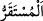
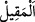

GERÇEK MÜLK (HÜKÜMRANLIK)
ALLAH’INDIR
24. O gün cennetliklerin kalacakları yer çok huzûrlu ve dinlenecekleri yer pek
güzeldir.
25. O gün gökyüzü beyaz bulutlar ile yarılacak ve melekler bölük bölük
indirileceklerdir.
26. İşte o gün, gerçek mülk (hükümranlık) çok merhametli olan Allah’ındır.
Kâfirler için de pek çetin bir gündür o.
“O gün” yâni müşriklere hiçbir sevinç haberi/müjde olmayan, onların “(Size,
sevinmek) yasaktır, yasak!” dedikleri ve amellerinin saçılmış zerreler hâline getirildiği
günde “cennetliklerin” yâni mü’minlerin “kalacakları yer çok huzûrlu” dünya
nimetlerinden faydalanan müşriklerin yerlerinden daha hayırlıdır. Âhirette müminlerin
meskenleri, kâfirlerin dünyadaki konaklarından daha güzeldir.
“__WORD__ oturmak ve konuşmak için pek çok vakit karar kılınan/kalınan yer demektir.
Cennetliklerin üstünlüğünün kâfirlerin âhirette içinde bulundukları duruma göre
olması da mümkündür. Eğer “Cehennemin hiç bir hayrı olmadığı halde cennet ehli
cehennem ehlinden kalacak yer bakımından nasıl hayırlı olur? ‘Bal sirkeden daha
tatlıdır’ denilmez.” diyecek olursan, şöyle cevap veririm: Daha önce geçtiği üzere “De
ki: “Bu mu yoksa ebedî cennet mi hayırlı?” (el-Furkân, 25/15) âyetinde olduğu gibi
bu ifâde onları küçük görme ve alay etme kabilindendir.
Cennetliklerin üstünlüğü mutlak olarak ziyade/fazlalık anlamında da olabilir. Yâni
mü’minler hayrın zirvesindedirler demektir. “Ve dinlenecekleri yer pek güzeldir.”
ifâdesi de bu mukayeseye göredir. Yâni mü’minlerin dinlenecekleri yer kâfirlerin
dünyadaki dinlendikleri yerlerden daha güzeldir. Kaylûle yeri olarak daha iyidir. Veya
onlarla alay etmek anlamında mü’minlerin âhirette dinlenecekleri yer pek güzeldir,
demektir. Ya da mü’minler kaylûle yapacak mümkün olan en güzel yerdedirler. “__WORD__
kaylûle yapılan yer demektir. Kaylûle, sıcak havalarda günün ortasında yapılan
istirahattir. Âyette kasdedilen ise hanımlarla birlikte istirahat edilen ve onlarla
karşılıklı sohbet edilen yer demektir. Yoksa cennette ne sıcak ne de uyku vardır. Bilakis
herhangi bir gaflet ve hisleri kaybetme olmaksızın mutlak istirahat söz konusudur. Aynı
şekilde cehennemde de kâfirlerin istirahat edip uyuyacakları hiç bir yer yoktur. Bilakis